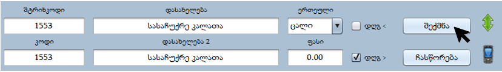
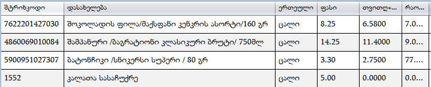
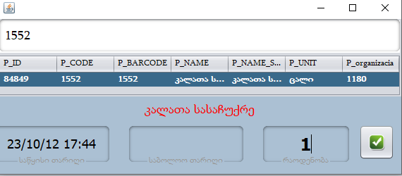
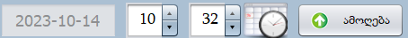

კალკულაცია საშუალებას გვაძლევს რამდენიმე პროდუქტი გავყიდოთ ერთ კოდზე.
უფრო გასაგები რომ იყოს ავიღოთ შემდეგი მაგალითი: დავუშვათ რომ გვინდა გავაკეთოთ სასაჩუქრე კალათა, კალათში უნდა იყოს შამპანური, სნიკერსი , შოკოლადის ფილა და კალათა. სასაჩუქრე კალათის გასაყიდად კალკულაციის გარეშე მოგვიწევდა რომ ყველა კალათაში არსებული პროდუქცია ცალ-ცალკე გაგვეტარებინა , მაგრამ კალკულაციის საშუალებით შეგვიძლია შევქმნათ ერთი პროდუქცია „სასაჩუქრე კალათა“ სადაც დავამატებთ ყველა იმ პროდუქციას რაც ამ კალათაში უნდა იყოს. ვნახოთ ეს ყველაფერი პრაქტიკაში :
პირველ რიგში შევქმნათ პროდუქცია რაზეც შემდგომში გავაკეთებთ კალკულაციას.
დავაჭიროთ შექმნას და ავირჩიოთ ჩვენს მიერ შექმნილი პროდუქცია.(რომ ავირჩევთ გალურჯდება)
ახლა დავაჭიროთ მწვანე ისარს სურათში მითითებულ ადგილას.
გამოგვიტანს ფანჯარას , გადავიდეთ კალკულაციის მოდულში.
(კალკულაციის დაწყებამდე დავრწმუნდეთ რომ ვდგავართ სწორ პროდუქციაზე)
ჩვენს შემთხვევაში ვამატებთ შემდეგ პროდუქციებს:
დავაჭიროთ მწვანე პლიუსს და გამოტანილ ფანჯარაში მოვძებნოთ პროდუქცია , ავირჩიოთ, მივუთითოთ რაოდენობა და დავაჭიროთ მწვანე მონიშვნას.
ყველა პროდუქციის ჩამატების შემდეგ შეგვიძლია დავიწყოთ პროდუქციის გაყიდვა.
პროდუქციას თუ არასწორად ჩავამატებთ შეგვიძლია მოვნიშნოთ წაშლის დადასტურება და დავაჭიროთ იმ შემთხვევაში, თუ არასწორად ჩამატებული პროდუქცია აღმოვაჩინეთ იმის შემდეგ რაც კალკულაციის პროდუქციის გაყიდვა დაწყებული, პირდაპირ ამოშლა არ შეიძლება, რადგან გაყიდვებიც ამოიშლება. ასეთ შემთხევაში, უნდა გამოვრთოთ, ამოვნიშნოთ, სიმულაცია, წავშალოთ პროდუქცია და შემდეგ დავამატოთ სწორი პროდუქცია იმ თარიღით როდესაც გავაკეთეთ კალკულაცია, რადგან გაყიდვები გამოაკლდეს პროდუქციას იმ თარიღიდან, როდესაც დაიწყო კალკულაციის პროდუქციის გაყიდვა.
ვუშვათ, რომ სასაჩუქრე კალათიდან გვინდა ამოვიღოთ სნიკერსი და გვინდა ჩავამატოთ ბაუნტი. პროგრამულად უნდა გავაკეთოთ შემდეგი ოპერაცია: დავდგეთ პროდუქციაზე რომელიც გვინდა რომ ავიღოთ, მოვნიშნოთ თარიღი რა დროიდანაც გვინდა ამოღება(თარიღის მონიშვნა გვჭირდება იმ შემთხვევაში თუ წინა პერიოდით გვინდა ამ ოპერაციის შესრულება) და დავაჭიროთ  -ს ახლა ჩავამატოთ ბაუნტი ჩვენს კალკულაციაში. საბოლოოდ პროგრამა სასაჩუქრე კალათის გაყიდვის დროს ნაშთიდა დაიწყებს სნიკერსის მაგივრად ბაუნტის გამოკლებას.
რეცეპტი - გამოიყენება ინგრედიენტების ჩასაწერად , ან შეგვიძლია გამოვიყენოთ კალკულაციის ისტორიის კომენტარის სახით ჩასაწერად.
ანალოგიურად გამოიყენება აპარატის ყავის პროგრამულად გასაყიდად.
კალკულაციის გაკეთების შემდეგ, როდესაც კალკულაციის პროდუქცია გაიყიდება, ვიცით, რომ კალკულაციის პროდუქციას ნაშთი არ გამოაკლდება, ვინაიდან კალკულაციაში შეყვანილ პროდუქციებს აკლდება ნაშთზე ის რაოდენობა რაც კალკულაციაში გვექნება მითითებული. წარმოებით შეგვიძლია წინასწარ ვაწარმოოთ პროდუქცია, ანუ წინასწარ გამოაკლოს კალკულაციაში შეყვანილი პროდუქციები ნაშთიდან და თვითონ კალკულაციის პროდუქციაზე დაემატოს ნაშთი. უფრო ადვილად რომ გავიგოთ ავიღოთ ესეთი მაგალითი: დავუშვათ ვაწარმოებთ ლობიანს, კალკულაციაში შევიყვანდით 1 ლობიანს რა ინგრედიენტებიც სჭირდება, როდესაც ლობიანი გაიყიდებოდა, პროგრამა ავტომატურად გამოაკლებდა კალკულაციაში შეყვანილ რაოდენობებს კალკულაციაში შეყვანილ პროდუქციებს. თვითონ კალკულაციის პროდუქცია ნაშთზე იქნებოდა ყოველთვის ნული და ვერ გავიგებდით რამდენი ლობიანი გვაქვს ახლა მაღაზიაში, წარმოების შემთხვევაში , თუ გამოვაცხობთ პირობითად 10 ლობიანს , გავაკეთებთ ამის წარმოებას და 10 ცალი ლობიანი აგვესახება პროდუქცია „ლობიანი“-ს ნაშთზე, ხოლო კალკულაციაში შეყვანილ პროდუქციებს წინასწარ გამოაკლდება 10 ცალი ლობიანისთვის საჭირო რაოდენობა. ლობიანის გაყიდვის შემთხვევაში პირდაპირ ლობიანის ნაშთს გამოაკლდება 1 ერთეული და დარჩება ნაშთზე 9 ცალი.
წარმოებისათვის უნდა გადავიდეთ წარმოებაში ჩავწეროთ რაოდენობა რამდენი ერთეულის წარმოებაც გვინდა და დავაჭიროთ წარმოებას.